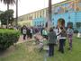
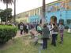

Raymond Canal, left, who grew up in the Miramonte area, called for Mayor Antonio Villaraigosa to get involved with the situation at Miramonte and talk to parents. Arturo Flores, right, said that "anybody whose job it was to identify issues" like this should be fired.
 

Reaction among parents and community members to news of last week's arrest of two Miramonte Elementary schoolteachers on allegations of sexual abuse has shifted from shock and confusion to anger and a call for action.
Demonstrators gathered in front of the school on Monday morning to protest the handling of the allegations against Mark Berndt and Martin Springer by Miramonte administrators and the Los Angeles Unified School District. The school will be closed Tuesday and Wednesday due to the ongoing investigation.
As protestors gathered in the backyard of one community member's home to organize, Raymond Canal, who grew up in the area, said he was there to "start something because we've got to get the principal and the vice principal out of there."
"This is a beautiful community and what's going on over here is a two-year investigation that [Miramonte] never let the parents know nothing about," said Canal. "No letters, no nothing.
"We need the parents," he said. "Parents, don't be scared if you're [undocumented]. We're all a community; we stand together and we need everybody to come out here and get together."
Canal was one voice of many calling for involvement by local government officials.
"Where's the mayor?" he asked. "Where's [Antonio] Villaraigosa? He can go see the [First Lady] in Inglewood but here our kids get molested and tampered with and mayor, where you at?"
Enrique Hernandez, a man who attended Miramonte, echoed Canal. "This is a fallen community and there's nobody stepping up to represent the people," he said. So did Reuben Mitchell.
"The mayor should be down here, standing in front of the school, trying to address some of the problems," said Mitchell. "And you see him nowhere. His words come from afar and don't mean much. It's just appalling." Mitchell was referring in part to the "Schools We Can Believe In" rally on Saturday, where Villaraigosa called the Miramonte situation an "abomination" and said that "everybody watching the news as this unravels has to be disgusted."
As of press time, calls by OnCentral to Villaraigosa's office had not been returned.
Police were present on school grounds to monitor the situation, according to Cleon Joseph of Los Angeles Police Department's media relations arm. As of press time no arrests have been made.
Mitchell, who has a child in the LAUSD, was one of many to describe himself as "appalled." "I'm real concerned, as far as the way LAUSD is handling it," he said. "There's no telling how many teachers in there knew about [the two who were arrested last week]. You don't know how many teachers in there are really scared because their skeletons may come out of the closet." Mitchell said Miramonte ought to close until the all the teachers still employed there have been evaluated for performance and method.
"As far as I'm concerned, there are a lot of situations that LAUSD tries to back up out of and put the responsibility on the home or the parents," he continued. "It's not us -- we send our kid to school to be protected, to be watched over by them. What needs to happen now -- as far as any allegation toward a teacher, they need to be immediately -- immediately -- removed from the school campus." Mitchell said cameras in the classroom wouldn't hurt anyone, and that it would prevent LAUSD from shirking responsibility, as he believes the district is now.
"Once their teachers do something, [LAUSD] tries to separate themselves from them. That's not right," he said. "You take all the responsibility for what your employees do." Mitchell added that if it had been a parent who had committed this crime, there wouldn't have been a "quiet investigation" -- he said "we'd be behind bars while the investigation was going on."
Arturo Flores, who attended Miramonte as a child, added that the teachers can't be the sole focus of the investigation. "Anybody whose job it was to identify issues like this or who failed in acting if the issue was brought up needs to go," he said. "We need to have them all fired."
Ruby Renozo was there to support the Miramonte parent-student community, and suggested that "if a teacher is out to do bad, he's going to find his way." "You just have to be constantly asking your kids, 'How was your day at school?'" She said she now asks her daughter, who attends a different LAUSD school, what she did and what she played every day. "You never know where it can be happening."
Renozo also said parents can't let this issue fade from the public's consciousness. "If parents stick together and say they want something done, I don't think it'll fade away really fast. We need to stand up for ourselves," she said. "We are all our children's voice. If we don't speak for our children, nobody else will. We're here to protect our own children. Obviously they were not being protected in school."
Armando Medel, whose son attends Miramonte, felt the same way, which is why his son wasn't in class today. He found out about the allegations via the news and said he was "disgusted."
"I'm angry. Real pissed. I don't even have words to describe it," he said. "We're talking kids -- defenseless kids. They don't really know what's going on. Us as parents, and [Antonio] Villaraigosa as mayor of this city, I think it's our and his job to come out and find out exactly what's going on." Medel also said that he has two other children -- one who had Berndt for a teacher and described the man as someone who was "very playful" and "used to give out a lot of candies." He also has a younger child who he said he may not send to Miramonte anymore.
Lucy Karageozian, who was also among the demonstrators, would support that decision. A crowd quickly gathered around her as she told them she was a mother who had traveled from Santa Monica. "I'm about the children," she said. "This whole community, this whole area here, these kids are their children. Do you understand?" Karageozian described herself as "frustrated," "upset," "angry" and "appalled."
"We need to get these kids transferred out of this school because this is a child-molester school," she told a cheering group of protestors. "Get the transfer papers, and if they [ask] why, say, 'This is a child-molester school!' You can do that. It is your right.
"This school needs to go down," she said.